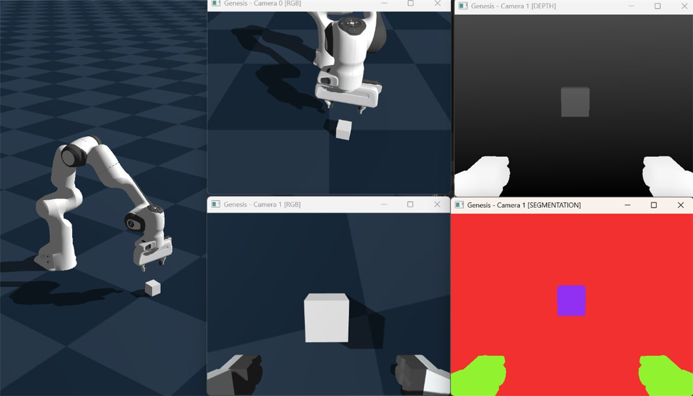

Deep Learning for Robotic Grasping in Domestic Environments
My undergraduate thesis at U of T's Robotics and Automation Laboratory (RAL), supervised by Prof. Andrew Goldenberg. I built a simulated pick-and-place pipeline for a Franka Panda arm that pins every failure on a specific stage, so I can see which part of the system actually breaks and why.
The challenge
Homes are cluttered and unstructured. When a robot fails to pick something up, it's usually unclear whether it saw the wrong thing, chose a bad grasp, or held on too loosely. Without knowing which, it's hard to know what to fix.
What I found
- A modular perception-to-manipulation pipeline for a Franka Panda in the Genesis simulator that attributes each pick-and-place failure to perception, grasp planning or grip control, across 2,100 paired, seeded YCB trials.
- Learned perception fails in clutter by picking the wrong object, not by segmenting it poorly. With zero-shot Grounding DINO + SAM 2, success fell from 92% to 72% with five objects, while classical depth-based perception held 86–92%.
- Why Contact-GraspNet trails analytic antipodal grasps (73% vs 90%): its failed grasps landed a median 24–36 mm off the object's center and slipped during transport.
- A slip-feedback grip controller using simulated tactile and contact sensors raised success on heavy objects from 85% to 95% under randomized mass and friction, with about 40% less median grip force.
Next steps
The thesis is still in progress. Next I'm adding collision-free, time-optimal motion planning with OMPL and TOPP-RA, then extending the pipeline from rigid objects to garments and large deformables such as making a bed.